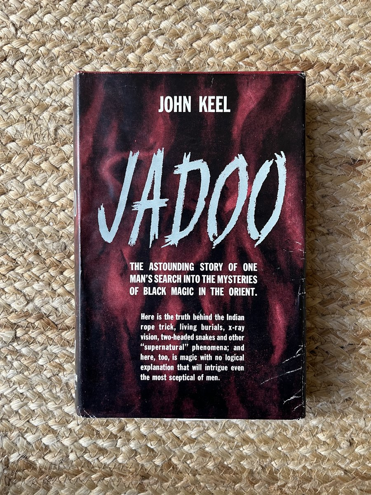
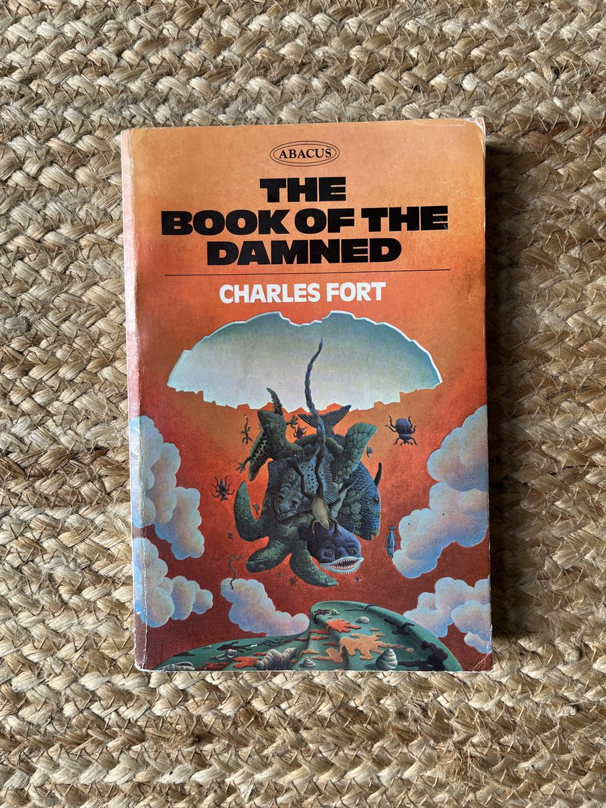
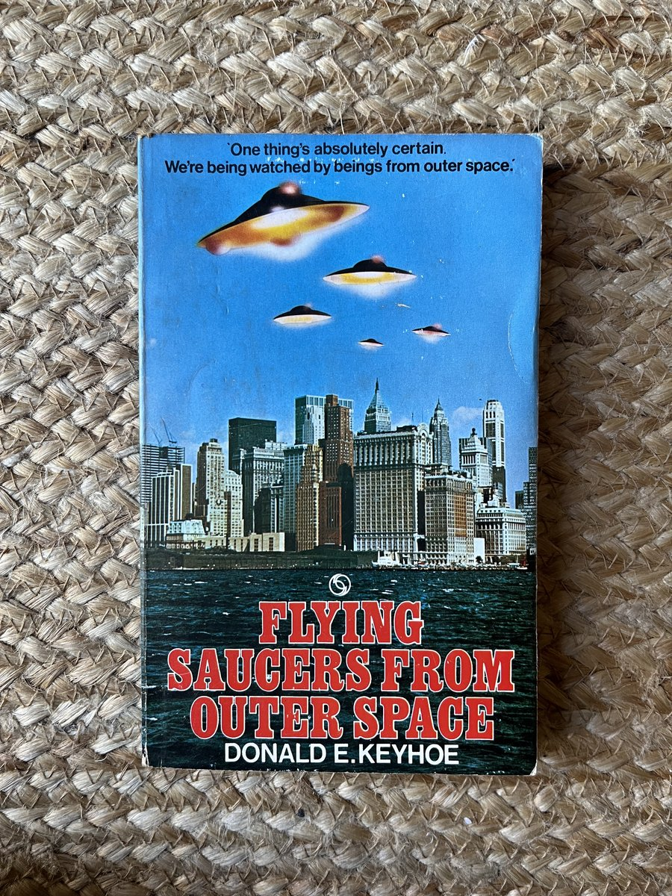
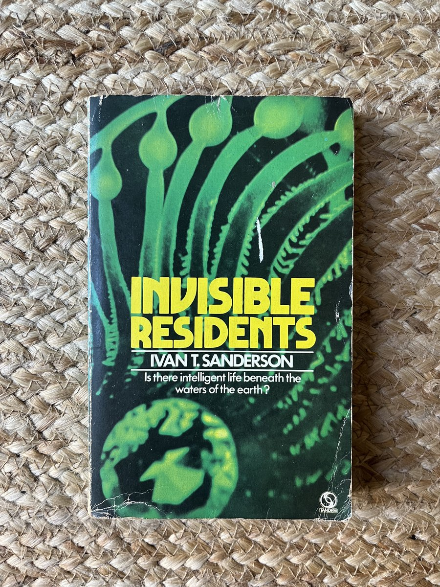
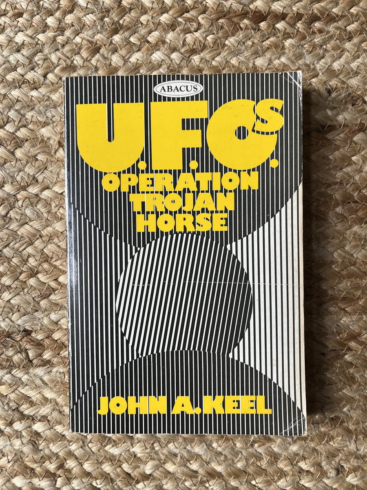
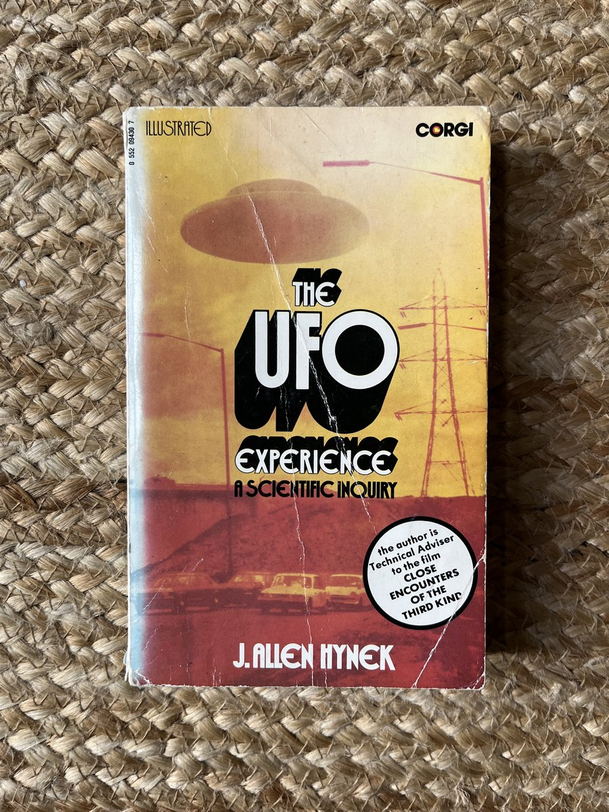

Books on
the unexplained.
Mid-century paperbacks on flying saucers, the paranormal, esoterica, and psi research.
Featured

The Book of the Damned

Flying Saucers from Outer Space

Invisible Residents

UFO: Operation Trojan Horse

The UFO Experience
By subject
- I. Ufology & Contactees From Adamski's contactee paperbacks to Vallée and Hynek's case-work.
- II. Cryptozoology Bigfoot, Loch Ness, the Jersey Devil — the more sober end of it.
- III. Parapsychology & Psi Rhine, Koestler, Targ & Puthoff. A half-century of testing the untestable.
- IV. Ghosts & Hauntings SPR proceedings, Borley Rectory, Enfield. Mostly British, mostly understated.
- V. Western Esoterica Crowley, the Golden Dawn, Theosophy, Colin Wilson's Occult.
- VI. Earth Mysteries Ley lines, sacred geometry, Michell, the post-Atlantis revival of the 1960s.
- VII. Charles Fort & Forteana The four books and the journals.
- VIII. Magazines & Journals Back issues of Fortean Times, the SPR Journal, INFO, and smaller titles.